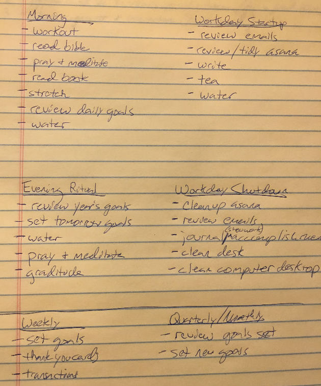

Daily Routines - small simple bites to achieve the goals we set
Making progress every single day. To look back 90 days and see a good record of effort and a ton of work done, that would be awesome!
After reading “The Compound Effect” by Darren Hardy (a must read), it was clear that I needed to be more consistent with my actions for reaching the goals I had set. With this new year I want to reach my goals. I want to stay focused. I want this to be the best year yet.
Focus…that means I need to keep my goals front of mind. I need to review them. I need a system.
I needed to stop drifting and to stop being so drivin.
| “Drifing and being drivin both lead to burnout” - Michael Hyatt
Routines can help with this. For us to succeed we’ll need routines that will be simple and rewarding. Let’s do it! 🏃♂️🏃♀️
Daily Routines
Morning
- drink 2 glasses of water (16oz)
- workout
- pray & meditate
- read bible
- stretch
- read
- review today’s goals
Workday start
- water & tea on desk
- charge my watch
- write (jounral, blog post, ideas, share progress)
- review/reply-to emails
- review/revise tasks (Asana)
Workday end
- review/reply to any last minute emails
- tidy up tasks for tomorrow (Asana)
- write (jounral, blog post, ideas, share progress)
- clean desk & Mac desktop
- text Molly I’m on my way home from theCO
Evening
- review yearly/weekly goals
- set goals for tomorrow
- read
- teeth
- 16oz of water down the hatch
- pray
Here’s my rough draft before typing and ordering:

Wrap up
My overarching goals are to: read more 📚, share progress 🎤, more fit 💪, and more focused 👀.
I was able to make these routines by listing out the items I wanted to make progress on everyday.
I’m excited about 2018 and hoping to make it fun and memorable. Here we go…day one.
If you liked this or want to chat, get in touch with me.